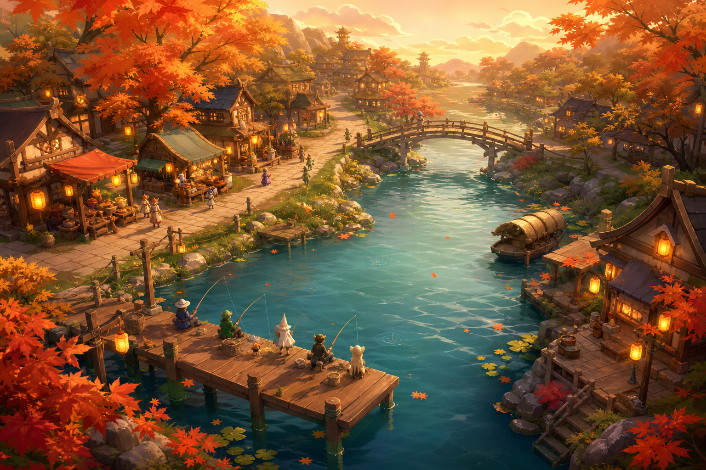
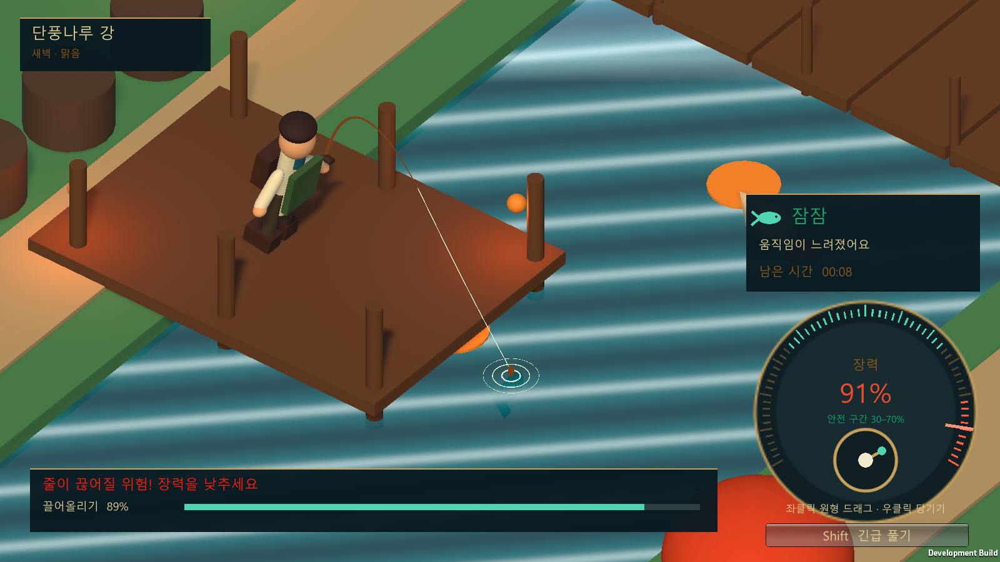
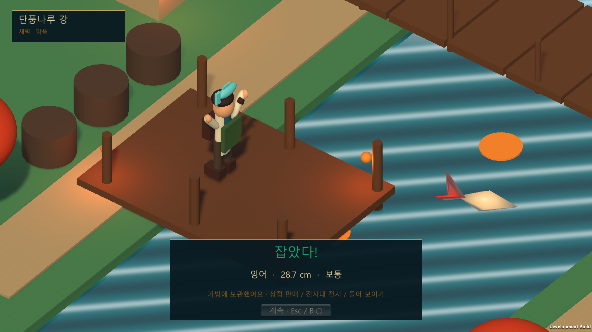
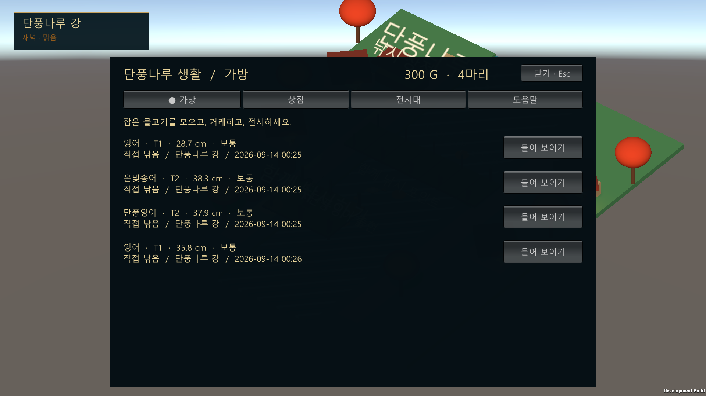
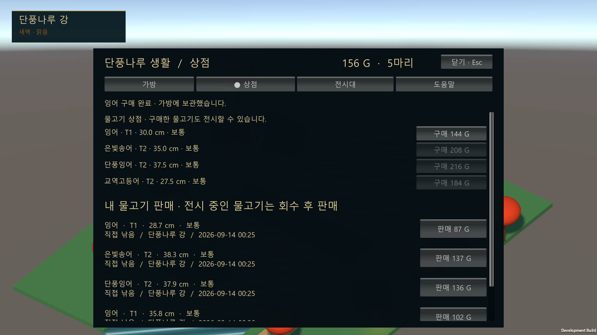
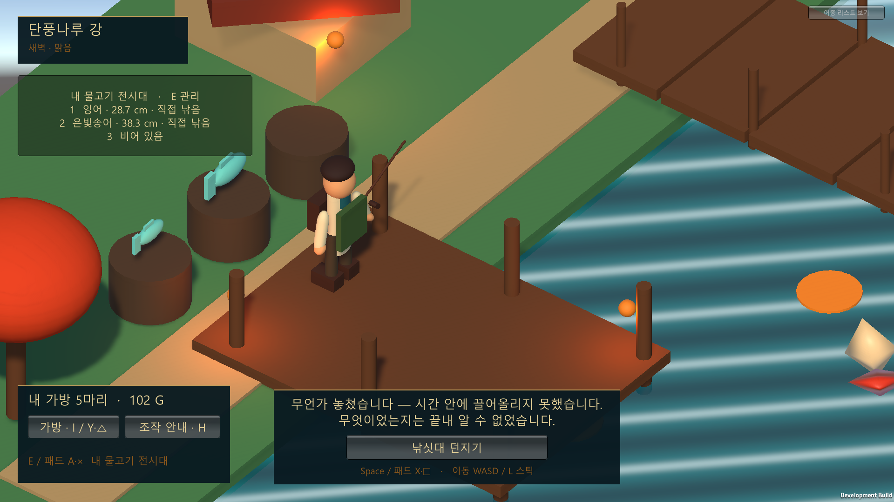

PROJECT 01 · WORK IN PROGRESS
낚시 생활 콘텐츠
프로토타입
낚는 손맛과 잡은 뒤의 선택을 하나의 반복 가능한 플레이 흐름으로 연결합니다.
01
문제 정의
낚는 몇 초가 끝난 뒤에도, 물고기가 다음 행동을 만드는 자산으로 남게 할 수 있을까?
미니게임의 긴장감과 판매·수집·전시 같은 생활 콘텐츠가 분리되면 어느 한쪽은 보상을 위한 반복 작업이 됩니다. 이 프로젝트는 캐스팅부터 획득 이후의 선택까지 한 번의 루프로 설계했습니다.
낚시는 보상을 받기 위한 관문이 아니라, 세계를 탐색하는 생활 행동이어야 한다.

PLAY LOOP 장력을 30~70% 구간에 유지하면서 릴을 감아 진행도를 올립니다.
02
규칙의 수정
처음 규칙에서는 아무것도 하지 않는 것이 가장 좋은 전략이었습니다.
위험 상한만 피하면 안전하다는 규칙 때문에 입력을 놓고 장력을 낮게 유지해도 높은 점수를 받을 수 있었습니다. 안전 기준을 상한선이 아닌 중간 밴드로 바꾸고, 밴드 안에서 회전 입력이 들어올 때만 진행되도록 수정했습니다.
- R2 / 마우스라인 장력 조절
- 스틱 / 회전 드래그안전 구간에서 릴링 진행
- L2 / Shift위험 장력을 낮추는 긴급 해제


03
낚은 뒤의 선택
같은 어종이라도 크기, 신선도, 획득 장소와 시간이 다른 하나의 개체로 다룹니다.
플레이어는 잡은 물고기를 바로 판매하거나, 보관하거나, 월드 전시대에 올릴 수 있습니다. 현재는 공유 경험의 모양을 검증하는 로컬 시연이며 멀티플레이 기능은 포함하지 않습니다.



04
검증 결과
2,180최종 자동 검사 조건 통과
41024×768부터 1920×1080까지 검증
0검증 중 예외 및 Assertion
자동 검사는 기능이 의도대로 동작하는지만 증명합니다. 조작이 자연스럽고 다시 하고 싶은지는 다음 사용자 플레이테스트에서 검증합니다.